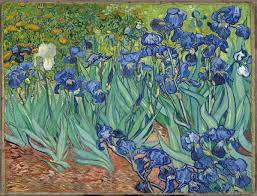

- İrisler, Vincent van Gogh'a ait pek çok iris tablosundan ve 1890'daki ölümünden önceki yıl Saint-Rémy-de-Provence, Fransa'daki Saint Paul-de-Mausole Akıl Hastanesi'nde yaptığı bir dizi resimden biridir.
- Van Gogh İrisler'i Mayıs 1889'da, akıl hastanesine geldiği hafta yapmaya başladı. Tabloyu hastanenin bahçesinde, doğada yaptı. Tabloda daha sonraki eserlerinde görülen yüksek tansiyon eksiktir. Ressam tablodan, resim yapmaya devam etmesinin kendisini delirmekten koruduğunu hissettiğinden, "hastalığımın paratoneri" diye söz etti.
- Tablo muhtemelen Van Gogh'un ve o dönemin diğer ressamlarının pek çok eseri gibi Japon ukiyo-e ahşap baskılarından etkilenilerek yapıldı. Güçlü ana hatlar, yakından görünüm gibi alışılmadık açılar ve ışığın düşüşünü baz almayan düz ve lokal renk kullanımı, görülen benzerliklerdendir.
- Van Gogh bu tabloyu bir çalışma olarak düşündü; muhtemelen bu nedenle tablonun bilinen bir çizimi yoktur. Buna karşın Van Gogh'un kardeşi Theo, tablo hakkında daha olumlu düşünerek onu derhal Rhone Üzerinde Yıldızlı Gece ile birlikte, Eylül 1889'daki Société des Artistes Indépendants yıllık sergisine sundu. Theo Vincent'a sergiyle ilgili şunları yazdı: "[Tablo] uzaktan göz alıyor. İrisler hava ve yaşamla dolu, güzel bir çalışma."
ANASAYFAYA GERİ DÖN